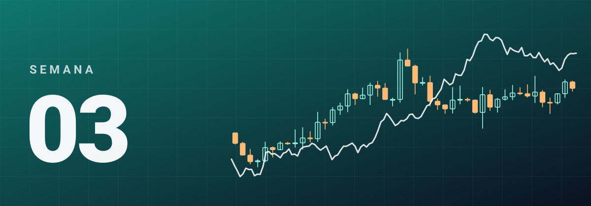
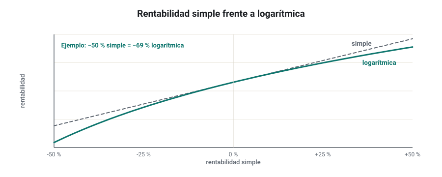
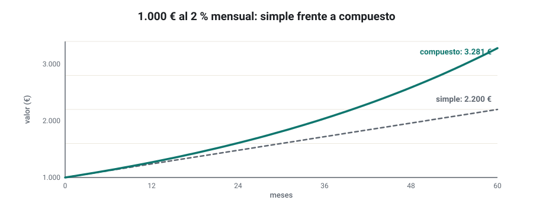
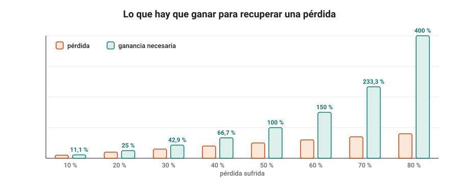
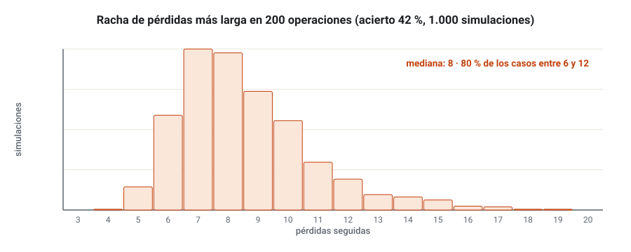
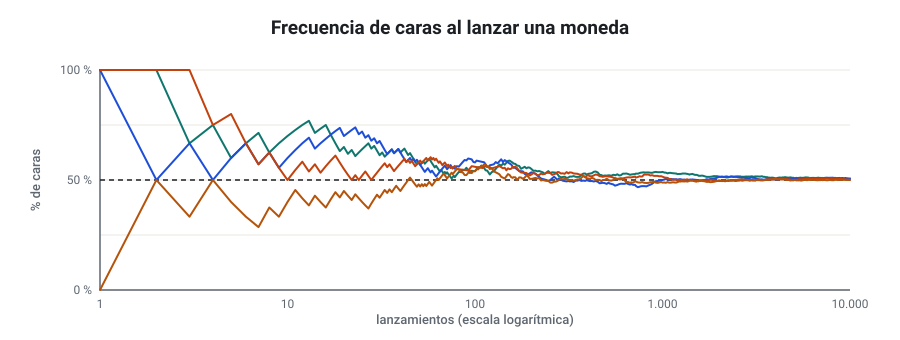
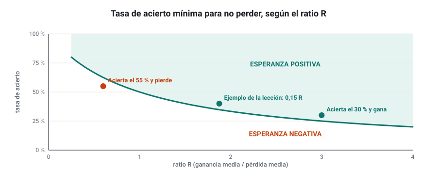
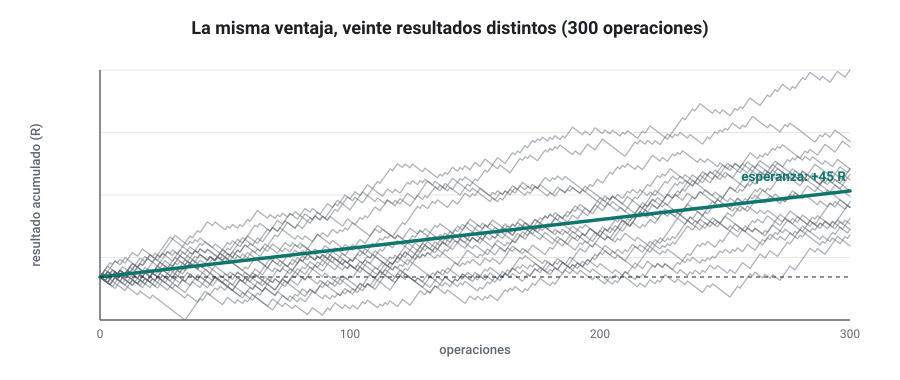
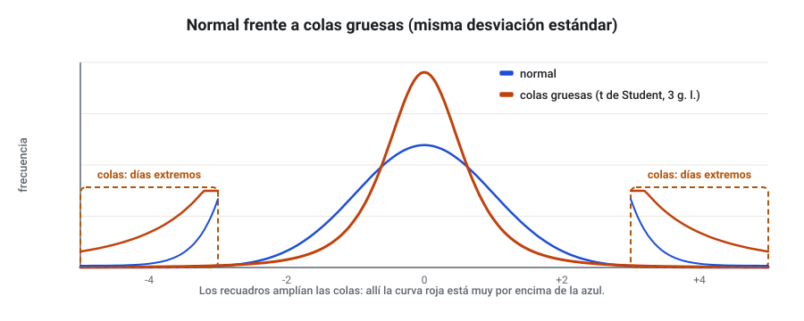

SEMANA 03 · ETAPA 1 · FUNDAMENTOS
Matemáticas y probabilidad para el trading
Presentación de la semana
Ya sabes cómo funcionan los mercados y cómo se lanza una orden. Esta semana aprenderás las matemáticas que hay detrás de cada resultado: cómo se mide una rentabilidad, por qué perder un 50 % exige ganar un 100 % para recuperarse y qué significa que una estrategia tenga «ventaja». No necesitas saber matemáticas avanzadas: todo se reduce a operaciones con porcentajes y a pensar en probabilidades. Lo que sí necesitas es practicar hasta que estos cálculos te salgan solos, porque los usarás todas las semanas.
Objetivos
Al terminar la semana sabrás:
- Manejar porcentajes, ratios y reglas de tres para calcular tamaños, costes y riesgos.
- Calcular rentabilidades simples, logarítmicas y anualizadas, y saber cuándo usar cada una.
- Aplicar el interés compuesto y explicar la asimetría entre pérdidas y ganancias.
- Estimar probabilidades a partir de frecuencias y entender por qué hace falta una muestra grande.
- Calcular la esperanza matemática de una estrategia y su tasa de acierto de equilibrio.
- Explicar qué es una distribución normal, qué son las colas gruesas y por qué importan en los mercados.
Plan de la semana (22–25 horas)
| Bloque | Horas | Qué harás |
|---|---|---|
| Clases | 6 | Seis lecciones: lectura y vídeos |
| Prácticas | 12 | Ejercicios en hoja de cálculo y simulaciones |
| Investigación y evaluación | 4 | Investigación I-03, entrega y examen |
| Revisión y planificación | 2 | Glosario, cuaderno y plan de la semana 4 |
Qué necesitas
- Una hoja de cálculo: Google Sheets, Excel o LibreOffice Calc. Esta semana la usarás mucho.
- Una calculadora con la función logaritmo neperiano (ln). La del móvil en modo científico sirve.
- Tu cuaderno de investigación.
- Tu cuenta demo de MT4 o MT5 de la semana 2, para descargar datos en la investigación.
Criterio para desbloquear la semana 4
Tener en estado APROBADO, con un 80 % o más cada uno:
- ☐ Examen de la semana 3
- ☐ Entrega práctica: hoja de cálculo de rentabilidad y esperanza
- ☐ Investigación I-03: pasos 1 a 4, 7 y 8 documentados
Fracciones, porcentajes, ratios, proporciones y reglas de tres
Formato: clase de 30 minutos · Lectura: 30 minutos
Por qué empezar por aquí
Casi todos los errores de cálculo de un trader principiante vienen de confundir un porcentaje con un punto porcentual, o de aplicar mal una regla de tres al calcular el tamaño de una posición. Son errores pequeños en el papel y grandes en la cuenta. Esta lección repasa las herramientas que usarás a diario.
Fracciones, decimales y porcentajes
Son tres formas de escribir lo mismo:
| Fracción | Decimal | Porcentaje |
|---|---|---|
| 1/2 | 0,5 | 50 % |
| 1/4 | 0,25 | 25 % |
| 1/100 | 0,01 | 1 % |
| 3/200 | 0,015 | 1,5 % |
Para pasar de decimal a porcentaje se multiplica por 100; para pasar de porcentaje a decimal se divide entre 100. En la hoja de cálculo trabaja siempre con decimales (0,01) y aplica el formato de porcentaje solo para mostrarlo.
Porcentaje de una cantidad y variación porcentual
- Porcentaje de una cantidad: el 2 % de 3.000 € es 3.000 × 0,02 = 60 €.
- Variación porcentual: si una cuenta pasa de 2.000 € a 2.150 €, ha variado:
El denominador es siempre el valor inicial. Es el error más común: dividir entre el valor final da otro número.
Porcentaje y punto porcentual
Si el drawdown máximo de una estrategia pasa del 10 % al 15 %, ha subido 5 puntos porcentuales, pero ha aumentado un 50 % (porque 5 es la mitad de 10). Las dos frases son correctas y dicen cosas distintas. Usa «puntos porcentuales» cuando restes dos porcentajes.
Ratios
Un ratio compara dos cantidades dividiéndolas. En trading los verás constantemente:
- Ratio beneficio/riesgo (R:R): si arriesgas 20 pips para ganar 40, el ratio es 40/20 = 2, y se escribe 2:1 o «2R».
- Profit factor: beneficio bruto entre pérdida bruta. Un profit factor de 1,5 significa que por cada euro perdido se ganaron 1,5.
- Apalancamiento: tamaño de la posición entre el margen. Lo viste la semana pasada.
Un ratio no tiene unidades si las dos cantidades están en la misma unidad: pips entre pips o euros entre euros.
Proporciones y regla de tres
Dos magnitudes son directamente proporcionales si, cuando una se multiplica por un número, la otra también. El valor del pip y el tamaño de la posición lo son: si 1 lote de EUR/USD vale 10 $ por pip, 0,30 lotes valen 3 $ por pip.
La regla de tres resuelve proporciones:
Siempre se redondea hacia abajo el tamaño de posición: redondear hacia arriba significa arriesgar más de lo que decidiste.
Comprueba que lo has entendido
- Una cuenta pasa de 5.000 € a 4.600 €. ¿Cuál es la variación porcentual?
- El drawdown pasa del 8 % al 12 %. Exprésalo en puntos porcentuales y en variación porcentual.
- Con 3.000 €, un riesgo del 0,5 % y un stop de 40 pips en EUR/USD (pip de 1 lote = 9,26 €), ¿qué tamaño usarías?
Rentabilidad simple, logarítmica y anualizada
Formato: clase de 35 minutos · Lectura: 35 minutos
La rentabilidad simple
La rentabilidad simple de un periodo es la variación porcentual que viste en la lección anterior:
Es la que entiende todo el mundo: si compras a 100 y vendes a 110, has ganado un 10 %.
Su problema aparece al encadenar periodos. Si un activo sube un 10 % y luego baja un 10 %, no vuelve a 100:
Las rentabilidades simples no se suman: se multiplican los factores (1 + r). La rentabilidad total de varios periodos es:
En el ejemplo: 1,10 × 0,90 − 1 = −0,01, es decir, −1 %.
La rentabilidad logarítmica
La rentabilidad logarítmica (o continua) usa el logaritmo neperiano:
De 100 a 110: ln(1,10) = 0,0953. De 110 a 100: ln(100/110) = −0,0953. Son simétricas y, sobre todo, se suman: la rentabilidad logarítmica de varios periodos es la suma de las de cada periodo. Por eso los analistas cuantitativos las prefieren para hacer estadística.

Para movimientos pequeños, de menos de un 2 o 3 %, las dos son casi iguales. Para pasar de una a otra:
La rentabilidad anualizada
Comparar un 30 % ganado en tres años con un 12 % ganado en uno exige ponerlos en la misma escala. La rentabilidad anualizada (o tasa anual compuesta, CAGR) es la rentabilidad constante por año que daría el mismo resultado final:
Ejemplo: 10.000 € que se convierten en 15.000 € en 3 años: (1,5)^(1/3) − 1 = 0,1447, un 14,47 % anual. No es 50 / 3 = 16,7 %: dividir entre los años ignora la composición.
Para pasar de una rentabilidad mensual a anual equivalente:
Un 1 % mensual equivale a 1,01^12 − 1 = 12,68 % anual, no a un 12 %.
Comprueba que lo has entendido
- Una acción sube un 20 % y luego baja un 20 %. ¿Cuánto ha ganado o perdido en total?
- Calcula la rentabilidad logarítmica de pasar de 50 a 55.
- Una cuenta pasa de 2.000 € a 2.800 € en 2 años. ¿Cuál es su CAGR?
Interés compuesto y la asimetría de las pérdidas
Formato: clase de 30 minutos · Lectura: 30 minutos
El interés compuesto
Con interés simple, cada periodo ganas sobre el capital inicial. Con interés compuesto, cada periodo ganas sobre el capital acumulado, incluidas las ganancias anteriores:
Con 1.000 € al 2 % mensual:
| Meses | Interés simple | Interés compuesto |
|---|---|---|
| 12 | 1.240,00 € | 1.268,24 € |
| 24 | 1.480,00 € | 1.608,44 € |
| 60 | 2.200,00 € | 3.281,03 € |

La tabla muestra el atractivo del interés compuesto, y también su trampa: supone que cada mes se gana un 2 %, sin un solo mes malo. Ninguna estrategia real hace eso. En la semana 14 verás cómo se reinvierte con prudencia.
La asimetría de las pérdidas
Si pierdes un porcentaje L de tu cuenta, para volver al punto de partida necesitas ganar:
| Pérdida | Ganancia necesaria para recuperar |
|---|---|
| 10 % | 11,1 % |
| 20 % | 25,0 % |
| 30 % | 42,9 % |
| 50 % | 100,0 % |
| 75 % | 300,0 % |
| 90 % | 900,0 % |

Es la razón matemática de que la gestión del riesgo sea lo primero. Una caída del 10 % se recupera con trabajo normal; una del 50 % puede costar años; una del 90 % casi nunca se recupera.
La volatilidad resta rentabilidad
Dos estrategias ganan de media un 5 % al mes. La A gana siempre un 5 %. La B alterna +25 % y −15 %, que también da una media aritmética del 5 %. Tras dos meses:
- A: 1,05 × 1,05 = 1,1025, un +10,25 %.
- B: 1,25 × 0,85 = 1,0625, un +6,25 %.
La media aritmética es la misma, pero la B crece menos porque su volatilidad «resta» rentabilidad compuesta. Este efecto se llama lastre de la volatilidad (volatility drag). Lo que de verdad acumula tu cuenta es la media geométrica, no la aritmética.
Comprueba que lo has entendido
- ¿Cuánto valen 5.000 € al 1,5 % mensual compuesto tras 24 meses?
- Tu cuenta cae un 40 %. ¿Qué rentabilidad necesitas para recuperarla?
- Explica con tus palabras por qué la estrategia B del ejemplo crece menos que la A.
Probabilidad básica y frecuencia
Formato: clase de 35 minutos · Lectura: 35 minutos
Qué es una probabilidad
Una probabilidad es un número entre 0 y 1 (o entre 0 % y 100 %) que mide lo posible que es un suceso. 0 es imposible; 1, seguro. En trading casi nunca conocemos las probabilidades: las estimamos a partir de la frecuencia con que algo ocurrió en el pasado.
Si en 200 operaciones de un backtest 84 fueron ganadoras, la frecuencia de acierto es 84 / 200 = 0,42. Estimamos que la probabilidad de ganar es de alrededor del 42 %… si el futuro se parece al pasado, que es mucho suponer.
Reglas básicas
- Complemento: la probabilidad de que algo no ocurra es 1 − P(A). Si ganas el 42 % de las veces, pierdes el 58 %.
- Sucesos independientes: si el resultado de una operación no influye en la siguiente, la probabilidad de que ocurran dos cosas seguidas es el producto: P(A y B) = P(A) × P(B).
- Suma de sucesos excluyentes: si dos sucesos no pueden ocurrir a la vez, P(A o B) = P(A) + P(B).
Las rachas son normales
Las personas subestimamos las rachas. En una serie larga de operaciones independientes, la racha de pérdidas más larga que cabe esperar crece con el número de operaciones. Como orientación:
donde n es el número de operaciones y q la probabilidad de perder. Con n = 200 y q = 0,58: ln(200 × 0,42) / ln(1/0,58) = ln(84) / ln(1,724) ≈ 4,43 / 0,545 ≈ 8 pérdidas seguidas. Es una orientación: en la práctica la racha más larga varía mucho de una serie a otra. Una estrategia con un 42 % de acierto, aunque sea buena, te hará pasar por eso. Si no lo esperas, la abandonarás en el peor momento.

La ley de los grandes números
Lanza una moneda 10 veces y puede salir cara 7 veces (70 %). Lánzala 10.000 y saldrá cerca de un 50 %. La ley de los grandes números dice que la frecuencia observada se acerca a la probabilidad real cuantas más observaciones tienes.

La consecuencia para ti: un backtest con 30 operaciones no demuestra nada. Su tasa de acierto puede estar muy lejos de la real por pura suerte. En la semana 4 aprenderás a medir cuánta incertidumbre tiene una muestra; por ahora, desconfía de cualquier conclusión con pocas operaciones.
La falacia del jugador
Después de 6 pérdidas seguidas, mucha gente piensa que «ya toca ganar». Si las operaciones son independientes, la probabilidad de la siguiente es la misma que siempre. Esta es la falacia del jugador, y lleva a aumentar el tamaño justo después de una racha mala, que es la forma más rápida de arruinarse.
Comprueba que lo has entendido
- En 150 operaciones, 57 fueron ganadoras. ¿Cuál es la frecuencia de acierto y la de pérdida?
- Con un 50 % de acierto, ¿cuál es la probabilidad de perder 4 operaciones seguidas?
- ¿Por qué 20 operaciones no bastan para saber si una estrategia funciona?
Esperanza matemática e incertidumbre
Formato: clase de 40 minutos · Lectura: 40 minutos
La pregunta que importa
Una estrategia que acierta el 70 % de las veces puede perder dinero. Otra que acierta el 35 % puede ganarlo. Lo que decide si una estrategia gana a largo plazo no es la tasa de acierto, sino la esperanza matemática: lo que ganas o pierdes de media por operación.
La fórmula
donde p es la probabilidad de ganar, G la ganancia media de las operaciones ganadoras y P la pérdida media de las perdedoras (en positivo).
La esperanza en R
Es más útil expresar la esperanza en múltiplos del riesgo (R), porque así no depende del tamaño de la cuenta. Si R es el ratio entre ganancia media y pérdida media:
En el ejemplo, R = 150 / 80 = 1,875 y E_R = 0,40 × 1,875 − 0,60 = 0,15 R: por cada euro que arriesgas, ganas 15 céntimos de media.
La tasa de acierto de equilibrio
¿Qué tasa de acierto necesitas para no perder con un ratio R dado? Basta con hacer E = 0:
| Ratio R | Acierto mínimo para no perder |
|---|---|
| 0,5 | 66,7 % |
| 1 | 50,0 % |
| 1,5 | 40,0 % |
| 2 | 33,3 % |
| 3 | 25,0 % |

Los costes mueven la curva
Los costes (spread, comisión, deslizamiento y swap) restan de cada operación. Si una estrategia busca 10 pips de beneficio con 10 pips de stop y paga 1 pip de coste por operación, en realidad gana 9 pips y pierde 11: R = 9/11 = 0,82 y su acierto de equilibrio sube del 50 % al 55 %. Cuanto más pequeños son los objetivos, más pesan los costes. Por eso el scalping es tan difícil para un minorista.
Esperanza no es certeza
La esperanza es una media a largo plazo. En 20 operaciones, una estrategia con esperanza positiva puede perder dinero; en 2.000, es muy probable que gane si la esperanza es real. Dos preguntas que harás siempre:
- ¿Es real la esperanza? Puede que el backtest la haya encontrado por casualidad (lo verás en las semanas 10 y 11).
- ¿Puedo aguantar la variabilidad? Una esperanza positiva no sirve de nada si una racha te obliga a parar antes de que se manifieste.

Comprueba que lo has entendido
- Acierto del 55 %, ganancia media 60 €, pérdida media 70 €. ¿Cuál es la esperanza?
- Con un ratio de 2,5, ¿qué tasa de acierto necesitas para no perder?
- ¿Por qué una estrategia con esperanza positiva puede perder dinero durante meses?
Distribuciones: normal, colas gruesas y por qué importan
Formato: clase de 35 minutos · Lectura: 35 minutos
Qué es una distribución
Si apuntas la rentabilidad diaria de un activo durante cinco años y cuentas cuántos días cayeron en cada intervalo (entre −1 % y −0,5 %, entre −0,5 % y 0 %, etc.), obtienes un histograma. La forma de ese histograma es la distribución de las rentabilidades: dice qué valores son frecuentes y cuáles raros.
La distribución normal
La distribución normal (o campana de Gauss) es simétrica y queda definida por dos números: la media (el centro) y la desviación estándar (la anchura, que verás en detalle la semana que viene). Tiene una propiedad muy útil, la regla 68–95–99,7:
- Alrededor del 68 % de los valores caen a menos de 1 desviación estándar de la media.
- Alrededor del 95 %, a menos de 2.
- Alrededor del 99,7 %, a menos de 3.
Según la normal, un movimiento de más de 4 desviaciones estándar es rarísimo: ocurriría aproximadamente un día de cada 16.000, es decir, una vez cada 60 años de sesiones.
Las colas gruesas
Las rentabilidades de los mercados no son normales. Tienen colas gruesas (fat tails): los movimientos extremos ocurren mucho más a menudo de lo que predice la normal. El 19 de octubre de 1987, el índice Dow Jones cayó un 22,6 % en una sola sesión, un movimiento que la distribución normal considera prácticamente imposible. Y no es un caso aislado: crisis, cierres con gap, decisiones de bancos centrales y desplomes de criptomonedas producen movimientos «imposibles» con regularidad.

Por qué importa a un trader algorítmico
- Los stops no te protegen de todo. Un gap puede saltar tu stop (lo viste en la semana 2), y los gaps grandes son más frecuentes de lo que «debería» pasar.
- Las métricas basadas en la normal subestiman el riesgo. Si calculas el peor día esperable suponiendo normalidad, te quedarás corto.
- El tamaño de posición debe dejar margen. Si una sola operación o un solo día puede hacer un daño grave a tu cuenta, el riesgo es demasiado alto aunque los cálculos «normales» digan que es improbable.
- Los backtests cortos pueden no contener ningún evento extremo. Un histórico sin crisis da una imagen demasiado optimista.
Asimetría
Además de las colas, fíjate en la asimetría de la distribución de tus operaciones:
- Una estrategia de tendencia suele tener muchas pérdidas pequeñas y pocas ganancias grandes (asimetría positiva).
- Una estrategia de reversión o de venta de opciones suele ganar poco y a menudo, con pérdidas grandes y raras (asimetría negativa). Parece más cómoda… hasta el día de la pérdida grande.
Comprueba que lo has entendido
- Si una rentabilidad diaria tiene media 0 % y desviación estándar 1 %, ¿entre qué valores caerá aproximadamente el 95 % de los días según la normal?
- ¿Qué significa que una distribución tenga colas gruesas?
- ¿Qué tipo de asimetría esperas en una estrategia que busca tendencias largas con stops ajustados?
Glosario de la semana
| Término | Inglés | Definición |
|---|---|---|
| Asimetría | Skewness | Grado en que una distribución se alarga más hacia un lado que hacia el otro |
| CAGR | Compound annual growth rate | Rentabilidad anual constante que daría el mismo resultado final |
| Colas gruesas | Fat tails | Mayor frecuencia de valores extremos que la que predice la normal |
| Desviación estándar | Standard deviation | Medida de la dispersión de los datos alrededor de la media |
| Distribución | Distribution | Forma en que se reparten los valores posibles y su frecuencia |
| Distribución normal | Normal distribution | Distribución simétrica en forma de campana, definida por media y desviación estándar |
| Esperanza matemática | Expectancy | Resultado medio esperado por operación a largo plazo |
| Falacia del jugador | Gambler's fallacy | Creer que tras una racha es más probable el resultado contrario |
| Frecuencia relativa | Relative frequency | Veces que ocurre un suceso dividido entre el total de observaciones |
| Histograma | Histogram | Gráfico de barras que muestra cuántos valores caen en cada intervalo |
| Interés compuesto | Compound interest | Ganancia que se calcula sobre el capital y las ganancias acumuladas |
| Lastre de la volatilidad | Volatility drag | Pérdida de rentabilidad compuesta causada por la variabilidad de los resultados |
| Ley de los grandes números | Law of large numbers | La frecuencia observada se acerca a la probabilidad real al aumentar la muestra |
| Media geométrica | Geometric mean | Rentabilidad media por periodo que, compuesta, da el resultado final |
| Probabilidad | Probability | Número entre 0 y 1 que mide lo posible que es un suceso |
| Punto porcentual | Percentage point | Diferencia aritmética entre dos porcentajes |
| R | R multiple | Resultado de una operación expresado en múltiplos del riesgo inicial |
| Racha | Streak | Serie de resultados iguales consecutivos |
| Rentabilidad logarítmica | Log return | Logaritmo neperiano del cociente entre precio final e inicial |
| Rentabilidad simple | Simple return | Variación porcentual entre precio inicial y final |
| Sucesos independientes | Independent events | Sucesos en los que el resultado de uno no afecta al otro |
| Tasa de acierto de equilibrio | Breakeven win rate | Acierto mínimo para que la esperanza sea cero con un ratio dado |
Ejercicios obligatorios
Resuélvelos en tu hoja de cálculo, mostrando las fórmulas. Se entregan con la práctica de la semana.
E1 · Variaciones. Calcula la variación porcentual: a) de 1.250 € a 1.400 €; b) de 3.000 € a 2.550 €; c) de un spread de 0,8 pips a uno de 1,2 pips.
E2 · Puntos y porcentajes. La tasa de acierto de una estrategia baja del 48 % al 42 %. Exprésalo en puntos porcentuales y como variación porcentual.
E3 · Tamaño de posición. Cuenta de 4.000 €, riesgo del 1 % por operación, stop de 30 pips en EUR/USD, EUR/USD a 1,0800 (un pip de 1 lote vale 10 $). Calcula el tamaño en lotes redondeando correctamente.
E4 · Rentabilidades encadenadas. Una cuenta gana un 8 %, pierde un 5 %, gana un 3 % y pierde un 6 % en cuatro meses. Calcula: a) la rentabilidad total; b) la suma de las cuatro rentabilidades; c) explica por qué no coinciden.
E5 · Logarítmicas. Con los precios 100, 104, 101, 107, 103, calcula las cuatro rentabilidades simples y las cuatro logarítmicas. Comprueba que la suma de las logarítmicas es igual a ln(103/100).
E6 · CAGR. Una estrategia convierte 5.000 € en 7.200 € en 4 años. Calcula su CAGR. ¿Qué rentabilidad mensual compuesta constante daría el mismo resultado?
E7 · Recuperación. Construye en la hoja una tabla con las pérdidas del 5 % al 95 %, de 5 en 5, y la ganancia necesaria para recuperarlas. Haz un gráfico con ella.
E8 · Rachas. Con una tasa de acierto del 35 %: a) ¿cuál es la probabilidad de perder 6 operaciones seguidas? b) ¿Qué racha de pérdidas más larga cabe esperar en 300 operaciones?
E9 · Esperanza. Calcula la esperanza en euros y en R de: a) acierto 62 %, ganancia media 45 €, pérdida media 70 €; b) acierto 30 %, ganancia media 260 €, pérdida media 100 €. ¿Cuál preferirías y por qué?
E10 · Costes y equilibrio. Una estrategia busca 20 pips con un stop de 20 pips. Calcula su acierto de equilibrio: a) sin costes; b) con un coste de 1,5 pips por operación (que reduce la ganancia y aumenta la pérdida).
E11 · Simulación con moneda. En la hoja de cálculo, simula 200 operaciones con un 40 % de acierto, ganancia de 2R y pérdida de 1R. Usa =SI(ALEATORIO()<0,4;2;-1) (o =IF(RAND()<0.4,2,-1) en inglés) y una columna con el saldo acumulado. Pulsa F9 diez veces y anota el resultado final y la racha de pérdidas más larga de cada vez. ¿Qué conclusiones sacas?
Investigación I-03 y entrega práctica
Investigación I-03 · ¿Sube más días de los que baja?
Esta semana practicas los pasos 1, 2, 3, 4, 7 y 8 del ciclo: añades el diseño del experimento.
Paso 1 · Hipótesis. Elige un activo (por ejemplo, el S&P 500, el DAX, EUR/USD o Bitcoin) y escribe una hipótesis sobre la frecuencia y el tamaño de sus días alcistas y bajistas. Ejemplo: «En los últimos 5 años, el DAX cerró al alza más del 50 % de los días y su esperanza diaria de comprar en la apertura y vender en el cierre fue positiva».
Paso 2 · Fuentes. Busca y cita al menos una fuente que hable del comportamiento diario de tu activo o de la asimetría de sus rentabilidades. Anota quién la publica, la fecha y si aporta datos propios.
Paso 3 · Datos. Descarga al menos 3 años de velas diarias de tu activo. Puedes usar el historial de tu demo de MT5 (en el gráfico diario, Archivo → Guardar como o el menú de símbolos) u otra fuente gratuita. Documenta la fuente, la zona horaria y si los precios son bid, ask o último.
Paso 4 · Diseño del experimento. Antes de calcular nada, escribe en tu cuaderno exactamente qué vas a medir: qué columna usas (apertura y cierre), qué cuenta como día alcista, qué periodo exacto analizas y qué resultado confirmaría o refutaría tu hipótesis. Hacerlo antes evita cambiar el criterio después de ver los resultados.
Paso 7 · Comparación. Calcula para cada día la rentabilidad simple de apertura a cierre. Obtén: porcentaje de días alcistas, rentabilidad media de los días alcistas y de los bajistas, esperanza diaria y la racha más larga de días bajistas. Compara el primer año de tus datos con el último: ¿se parecen?
Paso 8 · Conclusiones. ¿Se confirma la hipótesis? ¿La esperanza sería positiva si restaras un coste realista (por ejemplo, el spread que mediste en la semana 2)? ¿Qué limitaciones tiene tu análisis?
Entrega práctica · Hoja de rentabilidad y esperanza
Qué entregar
| Archivo | Contenido |
|---|---|
CODIGO_S03_ENT |
Hoja de cálculo con los ejercicios E1 a E11, una pestaña por ejercicio y las fórmulas visibles |
CODIGO_S03_SIM |
La simulación del E11 con los resultados de las diez repeticiones y su gráfico |
CODIGO_S03_INV |
Hoja de cálculo de la investigación I-03, con los datos, los cálculos y las conclusiones |
Sustituye CODIGO por tu código de alumno.
Cómo se evaluará
Se valora que los cálculos sean correctos y que las fórmulas estén en la hoja, no copiadas como números. En la investigación se valora sobre todo el paso 4: que el experimento esté definido antes de los resultados. Una hoja sin fórmulas o sin los datos de origen quedará como NO EVALUABLE.
Examen de la semana 3 · Variante A
Tiempo orientativo: 60 minutos · Puntuación: 100 puntos · Aprobado: 80 puntos · Puedes usar calculadora, pero no el material del curso ni el tutor de IA. Si suspendes, repetirás con otra variante.
Parte A · Opción múltiple (30 puntos, 2 por pregunta)
Parte B · Cálculo (45 puntos, 15 por ejercicio)
Muestra todos los pasos.
B1. Tienes una cuenta de 6.000 € y quieres arriesgar el 0,75 % por operación en EUR/USD con un stop de 35 pips. El EUR/USD cotiza a 1,0800 y un pip de 1 lote vale 10 $. Calcula el riesgo en euros, el valor del pip de 1 lote en euros y el tamaño de la posición en lotes.
B2. Una estrategia pasa de 10.000 € a 13.500 € en 3 años. a) Calcula su CAGR. b) Durante ese periodo sufrió una caída máxima del 22 %: ¿qué rentabilidad necesitó para recuperarse de ella?
B3. Un backtest da 240 operaciones: 96 ganadoras con una ganancia media de 180 € y 144 perdedoras con una pérdida media de 95 €. Calcula: a) la tasa de acierto; b) el ratio R; c) la esperanza en euros y en R; d) la tasa de acierto de equilibrio para ese ratio.
Parte C · Razonamiento (25 puntos)
En un máximo de 250 palabras: un conocido te enseña una estrategia que acierta el 85 % de las veces en 40 operaciones y te dice que «no puede fallar». Explica qué le preguntarías y por qué, usando al menos tres conceptos de esta semana (por ejemplo: ratio y esperanza, tamaño de muestra, asimetría o colas gruesas).